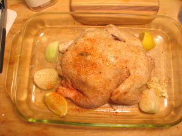

My first roast chicken
Last night, as promised, I roasted my first whole chicken. Here is the enemy:
Here is what I stuck up her butt:
Here is what she looked like after being browned in butter, stuffed, and rubbed all over with butter, salt, pepper, and paprika:

And here is how she turned out:
The bird was delicious: succulent and crispy on the outside. My biggest problem is carving the damn thing once it’s cooked. After years of watching my parents slice through a cooked chicken like a stick of butter, I expected it to be a bit easier. Any wisdom from my legions of readers?
Comments
Make a horizontal slice parallel to the cutting board through the both sides of the bird the length of the chicken just above the leg and wing. Then slice at a slight angle with the grain of the chicken meat from the top of the breastbone down to the horizontal slice and the meat will come off in lovely slices.
i think everyone forgets to remove the legs first. i always forget.
http://www.norbest.com/d_carving_a_turkey.cfm
look what i found!
unfortunately from weight watchers but sounds yum anyway, (scroll to bottom)
http://wordstoeatby.blogspot.com/2005/01/snack-time-curry-roasted-chick-peas.html
Oooh! That sounds good. I tried frying them in olive oil, and they taste weird. Crisp on the outside, and delicious with Maldon, but I didn’t “keep reaching for the bowl.” On the contrary. We’ll experiment on Saturday!
Add a comment